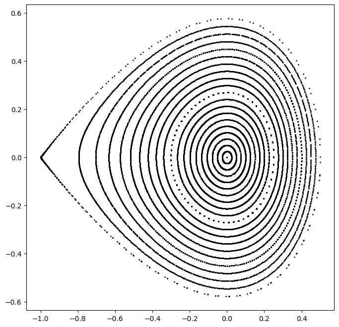

Example-04: Tao integrator
[1]:
# In this example Tao integrator usage is illustrated
# Integration step is constructed from a given hamiltonian h(q, p, *args)
# The resulting integration step signature is (qp, dt, *args)
# Integration step can be used with Yoshida composition and is JAX composable
[2]:
# Import
import jax
from jax import jit
from jax import vmap
# Function iterations
from sympint import nest
from sympint import nest_list
from sympint import fold
from sympint import fold_list
# Yoshida composition
from sympint import sequence
# Implicit midpoint integrator
from sympint import tao
# Plotting
from matplotlib import pyplot as plt
[3]:
# Set data type
jax.config.update("jax_enable_x64", True)
[4]:
# Set device
device, *_ = jax.devices('cpu')
jax.config.update('jax_default_device', device)
[5]:
# Construct Yoshida composition step (multi-map integrator)
# H = H1 + H2
# H1 = 1/2 q**2 + 1/3 q**3 -> [q, p] -> [q, p - t*q - t*q**2]
# H2 = 1/2 p**2 -> [q, p] -> [q + t*q, p]
# Set mappings for sovable parts
def fn(x, t):
q, p = x
return jax.numpy.stack([q, p - t*(q + q**2)])
def gn(x, t):
q, p = x
return jax.numpy.stack([q + t*p, p])
# Generate Yoshida sequence
fs = sequence(0, 2, [fn, gn], merge=True)
print(len(fs))
# Generate folded step (sequence composition)
integrator = fold(fs)
# Set parameters
dt = jax.numpy.array(0.01)
x = jax.numpy.array([0.1, -0.05])
# Compile several integration steps
step = jit(nest(10, integrator))
xa = step(x, dt)
xa
19
[5]:
Array([ 0.09446052, -0.06067929], dtype=float64)
[6]:
%%timeit
step(x, dt)
24.2 µs ± 225 ns per loop (mean ± std. dev. of 7 runs, 10,000 loops each)
[7]:
# Construct Yoshida composition step (tao)
# Define hamiltonian function
def h(q, p, *args):
return jax.numpy.sum(1/2*(q**2 + p**2) + 1/3*q**3)
# Define implicit step
integrator = tao(h, binding=0.0)
# Generate Yoshida sequence
fs = sequence(0, 2, [integrator], merge=False)
print(len(fs))
# Generate folded step (sequence composition)
integrator = fold(fs)
# Set parameters
dt = jax.numpy.array(0.01)
t = jax.numpy.array(0.0)
x = jax.numpy.array([0.1, -0.05])
# Compile several steps
step = jit(nest(10, integrator))
xb = step(x, dt, t)
xb
9
[7]:
Array([ 0.09446052, -0.06067929], dtype=float64)
[8]:
%%timeit
# Timing
step(x, dt, t)
60.9 µs ± 215 ns per loop (mean ± std. dev. of 7 runs, 10,000 loops each)
[9]:
# Compare
jax.numpy.isclose(jax.numpy.linalg.norm(xa - xb), 0.0)
[9]:
Array(True, dtype=bool)
[10]:
# Plot several phase space trajectories
# Define single orbit generator
orbit = jit(nest_list(2**10, step))
orbit(x, dt, t)
# Generate several orbits
qs = jax.numpy.linspace(0.0, 0.5, 21)
ps = jax.numpy.zeros_like(qs)
xs = jax.numpy.stack([qs, ps]).T
trajectories = vmap(orbit, (0, None, None))(xs, dt, t)
# Plot orbits
plt.figure(figsize=(8, 8))
for trajectory in trajectories:
plt.scatter(*trajectory.T, color='black', marker='o', s=1)
plt.show()

[11]:
# Tao step is differentiable with respect to initial condition and parameters
jax.jacrev(integrator)(x, dt, t)
[11]:
Array([[ 0.99994002, 0.0099998 ],
[-0.01199472, 0.99994003]], dtype=float64)
[12]:
# Batched evaluation with vectorized map
[13]:
%%time
jax.numpy.stack([orbit(x, dt, t) for x in xs]).shape
CPU times: user 1.25 s, sys: 5.99 ms, total: 1.26 s
Wall time: 1.15 s
[13]:
(21, 1024, 2)
[14]:
%%time
vmap(orbit, (0, None, None))(xs, dt, t).shape
CPU times: user 76.4 ms, sys: 1.85 ms, total: 78.3 ms
Wall time: 77.1 ms
[14]:
(21, 1024, 2)
[15]:
# Compile
# Note, changing batch size will trigger a recompile
fj = jit(vmap(orbit, (0, None, None)))
fj(xs, dt, t).shape
[15]:
(21, 1024, 2)
[16]:
%%time
fj(xs, dt, t).shape
CPU times: user 77.8 ms, sys: 871 µs, total: 78.7 ms
Wall time: 77.7 ms
[16]:
(21, 1024, 2)